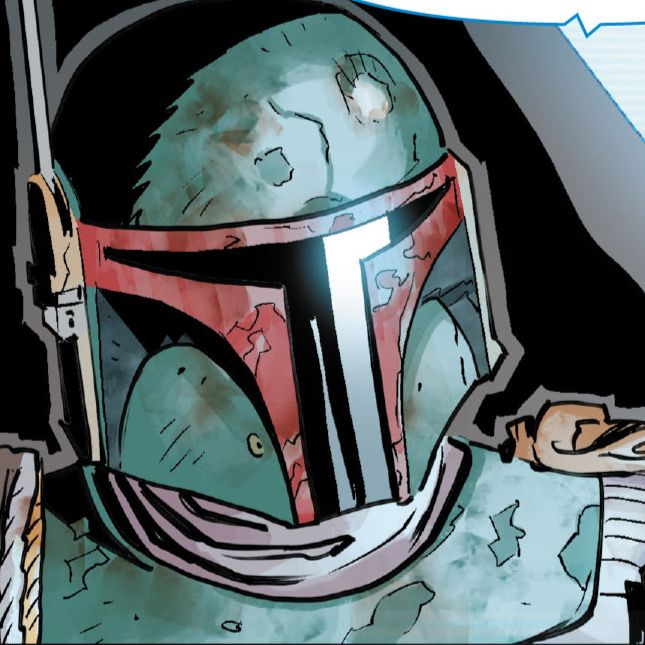
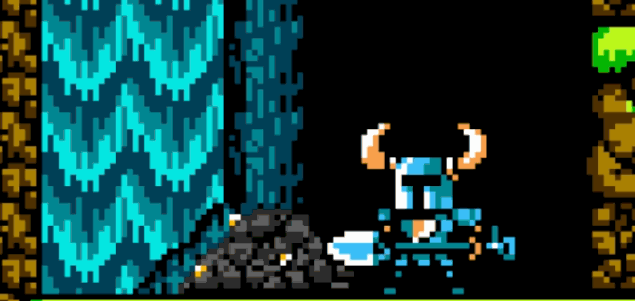
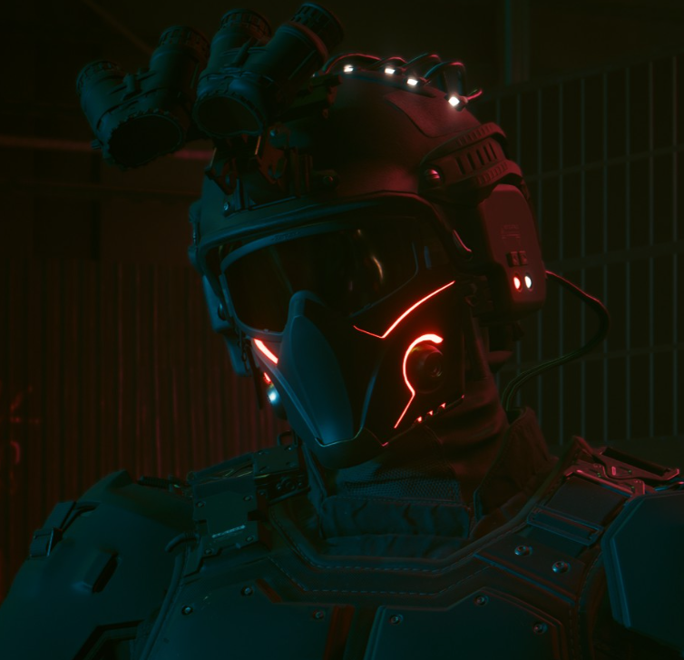
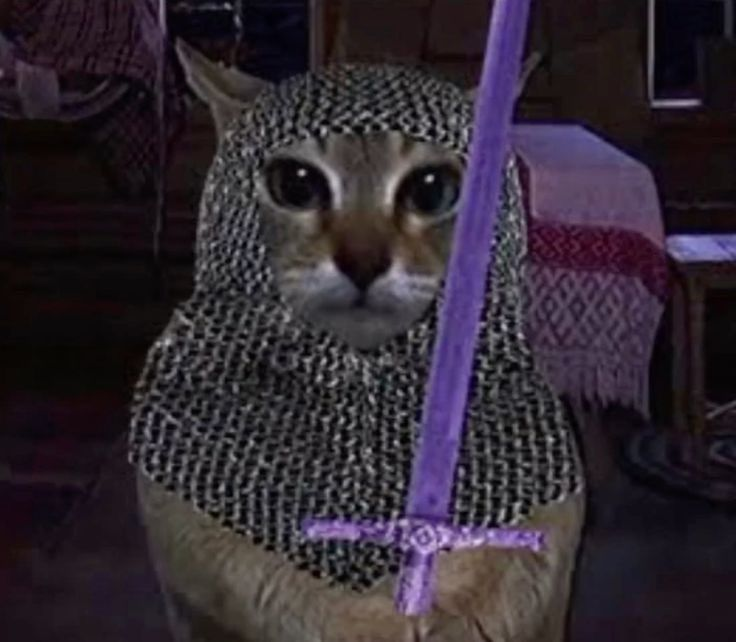
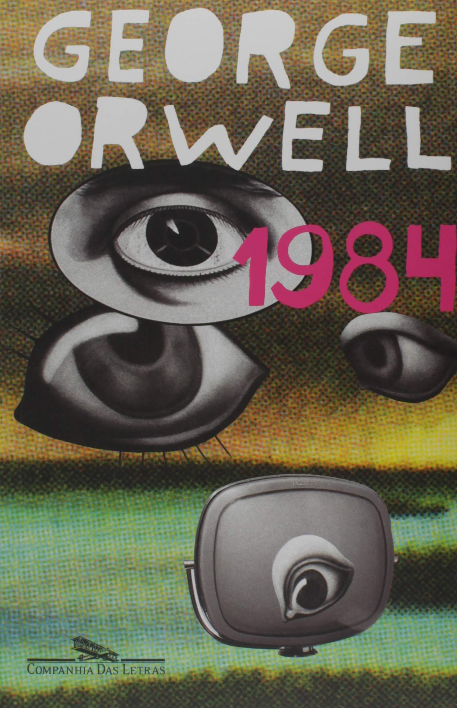
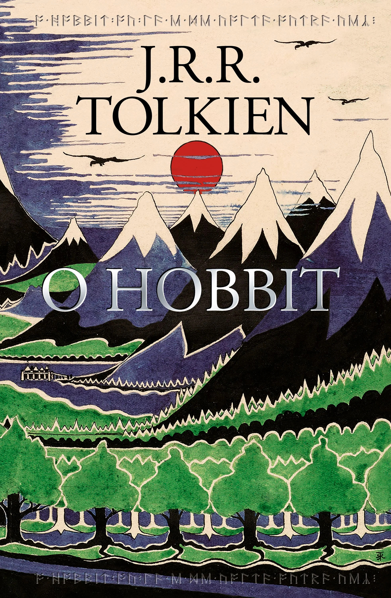

League of Legends is a copy of Dota, Valorant is a mashup copy of CSGO and Overwatch (which is a copy of TF2), TFT is a copy of Autochess, Legends of Runeterra is a copy of Hearthstone. Riot is a shameless copycat, akin to so many Chinese companies that rip off western products/ideas. They barely even try to hide it in some instances such as Nashor, which is just one character swap away from being the reverse spelling of Dota’s Roshan. I understand that many games these days draw heavy inspiration from others, but Riot is 4/4 in drawing maybe a little too heavy of inspiration.
os circuitos de consagração social serão um tanto mais eficazes quanto a maior distancia social do objeto consagrado.
Give a man a gun
and he rob a bank...
Give a man a bank
AND HE CAN ROB THE WORLD
Frutiger Aero propõe um futuro onde o tecnológico e o natural se unem em equilíbrio, formando uma sociedade saudável e harmônica.
Fascismo é uma ideologia política ultranacionalista e autoritária caracterizada por poder ditatorial, repressão da oposição por via da força e forte arregimentação da sociedade e da economia.
Imagens e Gifs




Gimli, um anão guerreiro e personagem do filme Senhor dos Anéis.
Música Cupid do jack stauber completa e disponível para dowload:
Análise de livros lidos
1984 - George Orwell

Achei um livro muito forte e desconfortável de ler, no bom sentido.
A sensação de vigilância constante deixa a história bem pesada e faz pensar bastante
sobre controle de informação e poder. Não é uma leitura leve, mas é muito marcante
e difícil de esquecer.
Revolução dos bichos - George Orwell
Gostei de como o livro usa uma história simples com animais para falar de política e poder.
A leitura é rápida, mas a mensagem é bem crítica.
É interessante ver como os ideais da revolução vão sendo distorcidos ao longo da história.
Delicious in Dungeon Meshi - Ryoko Kui
Achei uma fantasia bem diferente porque mistura aventura com culinária.
A ideia de cozinhar monstros parece engraçada no começo, mas acaba ajudando a desenvolver muito o mundo da história.
É leve, divertido e criativo.
O hobbit - J. R. R. Tolkien

É uma história de aventura bem clássica e agradável de ler.
O desenvolvimento do Bilbo é uma das partes mais legais, porque ele começa bem comum e vai se tornando mais corajoso ao longo da jornada.
Dá uma sensação de conto de aventura tradicional.